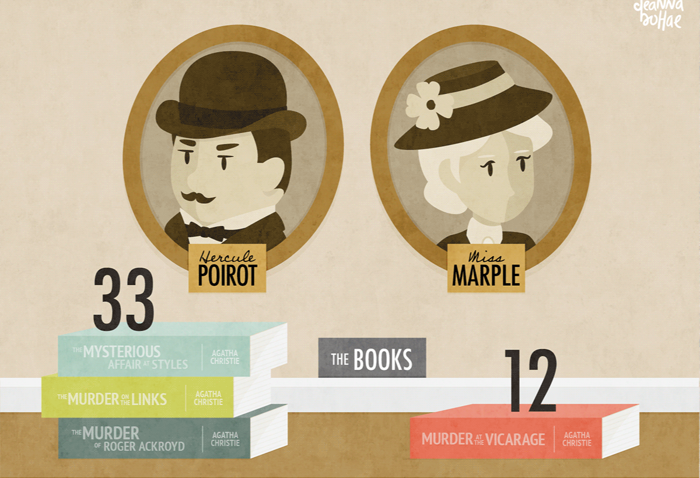

Maurice Leblanc
Confira a ordem cronológica de lançamentos dos livros do ladrão de casaca, Arsene Lupin.


Confira a ordem cronológica de lançamentos dos livros do ladrão de casaca, Arsene Lupin.
Agatha Mary Clarissa Christie DBE, nascida Agatha Mary Clarissa Miller, popularmente conhecida como Agatha Christie, foi uma escritora britânica que atuou como romancista, contista, dramaturga e poetisa.
Clique no botão abaixo para ver sua biografia, entender como viveu a autora, e suas principais obras públicadas:

Stephen Edwin King é um escritor norte-americano de terror, ficção sobrenatural, suspense, ficção científica e fantasia. Os seus livros já venderam mais de 400 milhões de cópias, com publicações em mais de 40 países. É o 9º autor mais traduzido no mundo.
Clique no botão abaixo para ver sua biografia, entender como viveu o autor, e suas principais obras públicadas:
Maurice Leblanc é o criador de Arsène Lupin, o ladrão de casaca, e também do seu maior inimigo: Herlock Sholmes. Jornalista ensaísta e romancista, o escritor francês nasceu em 1864 e morreu em 1941.
Clique no botão abaixo para ver sua biografia, entender como viveu o autor, e suas principais obras públicadas: